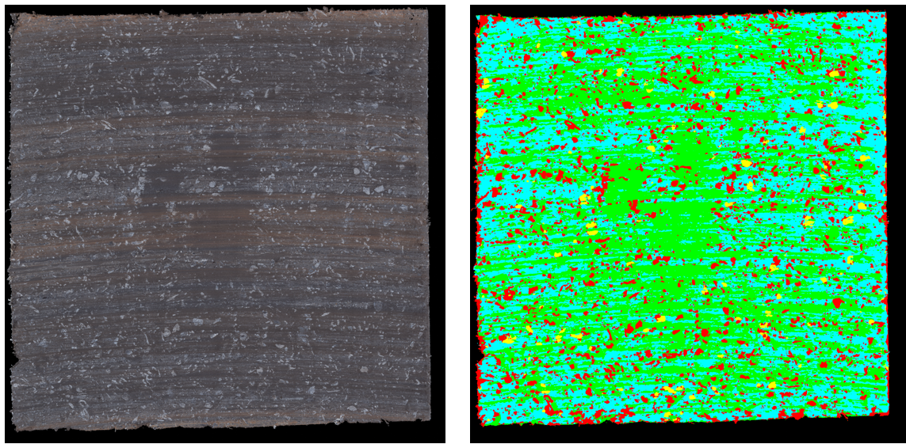

Uncertainty Sensitivity Analysis for Deep Ensembles
PyTorch · Uncertainty Quantification · Explainable ML
Uncertainty
Surrogate model
Sensitivity
- Goal: Quantify how input features influence predictions while accounting for model uncertainty.
- Approach: Small physics-simulation dataset modeled with a deep ensemble of 10 MLPs.
- Beam demo: Code
Recurrent Neural Network Surrogate Modeling for Dynamical Systems
PyTorch · Time-series · Surrogate / ROM
RNN / LSTM / GRU
Sequence modeling
Fast inference
- Goal: Learn a surrogate model that predicts system response over time from parameters/initial conditions.
- Approach: Sequence-to-sequence surrogate + training/validation with temporal splits (no leakage).
- Results: speedup ×X MAE/RMSE Y stability Z
- Links: Code
Material Segmentation with Experimental & Numerical Data Acquisition
Computer Vision · Multimodal Data · Dynamics · Reduced-Order Modeling
Segmentation
Multimodal acquisition
Dynamic simulation
ROM

- Goal: Automatically segment multiple material classes from images and align them with physics-driven signals.
- Experimental acquisition: Multimodal measurements combining
thermal imaging, topography (surface height/roughness), and dynamic responses (time-dependent signals).
- Numerical acquisition: Dynamic simulations (CEA & time-domain) supported by a
Reduced-Order Model (ROM) to enable fast parameter sweeps and scalable dataset generation.
- Approach: End-to-end segmentation pipeline (pre-processing, training/inference, post-processing) with IoU/Dice-style metrics and qualitative overlay analysis.
- Outputs: Segmentation masks, overlays, and uncertainty/confidence maps for robust interpretation across modalities.